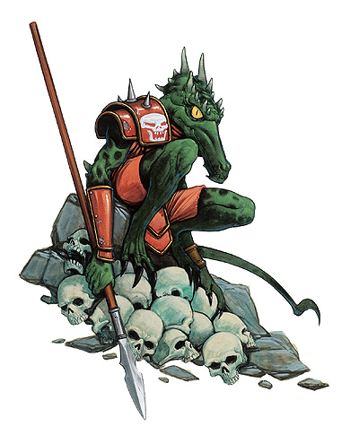
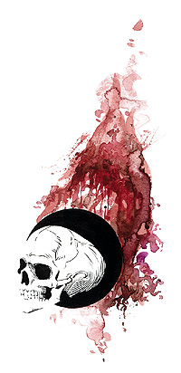

库尔图马克（Kurtulmak）

侏儒杀手，监守者
中等神力
邪徽：侏儒头骨

居住位面：Baator
阵营：守序邪恶
神职：狗头人，陷阱制作，采矿，战争
信徒：狗头人
牧师阵营：守续邪恶，守序中立，中立邪恶
领域：邪恶，秩序，机运，诡术
偏好武器：矛
狗头人之神库尔图马克的外貌就如同一只身体形特别大些的狗头人一般。他大概有5英尺高，浑身上下绿黑班驳的鳞片。他那如同鼠尾一般的长尾巴的末尾上还带着一跟毒刺。
库尔图马克教授了狗头人们采矿的艺术，埋伏围猎的策略，以及陷阱制造上的学问。侏儒之神加尔・闪金有一次曾在玩笑中把库尔图马克居住的洞穴弄塌了。这件事情严重地伤害了库尔图马克在两方面上的自尊，即是打击了他在玩弄诡计和采矿技术上的自认专家的地位。自从那时起，库尔图马克开始对加尔和所有的侏儒怀恨在心。他的对怀恨包括了所有与侏儒相关的东西，比如幻术和恶作剧。他将侏儒的头骨画在了自己小小的护肩上。
教义
库尔图马克是一位野蛮的神祗，他随时留意着发生在主物质界的任何事，并渴望着为他的子民争得一切利益。他教授狗头人们们，所谓“公平”决斗，那是蠢人和倒霉蛋才遵循的法则，逃跑之后卷土重来要比被打败好的多，还有，只要还有一个狗头人活着，就不能不报仇。库尔图马克常说，复仇对狗头人来说一是种甜美的奢侈品，尽管有些时候需要漫长的等待。库尔图马克也教会了他的子民一些小机灵，一些有趣的计划，以及一些巧妙的埋伏手段，他认为这些远远好过直接拿着刀剑无谋的冲上去。
神职人员与神殿
库尔图马克的牧师一般的工作莫过于指挥战争和组织突袭商旅，安置部落的防御系统（特别是陷阱的构筑工作），以及监督部落的采矿工作。有些牧师也会组织探险队以开发新的藏矿区域，如果探险队发现了有孱弱的侏儒或者矮人移民构建的矿坑的话，他们会毫不犹豫的占领之，甚至奴役这写侏儒或矮人。
没有任何一个狗头人社会群落里没有库尔图马克的神殿或者祭坛的。它们通常直接挖在坚硬的岩石之内，并需要通过狭长的，崎岖的，且遍布陷阱的小道才能抵达。在其之内的库尔图马克神殿通常昏暗狭窄，且以侏儒头骨的碎片装饰着。
库尔图马克
战士16级/牧师8级/游荡者8级/术士8级
中体形外界生物（邪恶，守序）
神格等级：15
生命骰：20d8+200（外界生物）加16d10+160（战士）加8d8+80（牧师）加8d6+80（游荡者）加8d4+80（1064hp）
先攻调整值：+21，总是最先行动（+17敏捷，+4精通先攻，绝对先攻）
速度：60尺
防御等级：79（+17敏捷，+15神格等级，+28天生防御，+9偏转）
攻击加值：+5锐锋守序邪恶短矛 +68/+63/+58/+53近战，毒刺 +68近战；或者法术 +62近战接触或 +72远程接触
伤害加值：+5锐锋守序邪恶短矛 1d8+17/18-20/*3，毒刺 1d4+5加中毒效果/19-20；或者使用法术
占据/威胁范围：5尺*5尺/5尺
特殊攻击：领域神力，超凡神格能力，类法术能力，每日12次斥责不死生物，偷袭 +4d6
特性：狗头人种族特性，神格免疫，伤害减免 50/+4，火元素伤害抗力 35，快速医疗 35，神术自发性施法，理解、交谈及阅读所有语言并直接于任何15里内的生命存在交谈，远程沟通，神祗国度，随意无误传送，随意位面旅行，魔宠（老鼠），反射闪避，设计陷阱，离奇闪避（不能够被夹击），SR47，神力光环（1500尺，DC33）
豁免调整值：坚韧 +57，反射 +66，意志 +56
能力值：力量 25，敏捷 45，体质 31，智力 29，感知 24，魅力 29
技能调整值：估价 +35，平衡感 +43，唬骗 +356，攀爬 +52，专注 +47，手艺（金属加工） +77，手艺（石工） +77，手艺（制作陷阱） +89，交涉 +28，解除装置 +58，易容 +69，脱逃术 +66，躲藏 +63，威吓 +35，跳跃 +41，知识（奥术） +46，知识（建筑与工程） +47，知识（地理） +47，聆听 +63，潜行 +75，开锁 +66，扒窃 +39，专业（矿工） +69，探知 +43，搜索 +49，察言观色 +40，侦察 +52，游泳 +41，技能检定掷骰自然结果总是取20
专长：警觉，盲斗，顺势劈，格斗反射，闪避，忍耐，专家，高级顺势劈，精通冲撞，精通重击（短矛），精通重击（毒刺），精通卸除武器，精通先攻，精通绊摔，精通徒手打击，钢铁意志，闪电反射，机动，猛力攻击，跳跃攻击，震慑拳，精通破坏武器，高级专家，武器娴熟（毒刺），武器专攻（短矛），武器专攻（毒刺），武器专精（短矛），武器专精（毒刺），旋风攻击
狗头人种族特性：黑暗视觉，在光亮处攻击加值减1
神格免疫：属性伤害，属性吸取，酸，冷，即死效果，疾病，瓦解，电，能量吸取，心智影响效果，麻痹，毒，睡眠，震慑，变形，监禁，放逐。
超凡神格能力：改变现实，改变大小，天神下凡，打击仇敌（侏儒），战斗第六感，操控生物（狗头人），神力冲击波，神力闪避，神力快速医疗，神力护盾，神力技能专攻（手艺[制作陷阱]），额外领域（秩序），创造生物（狗头人），死亡之手，集体神力护盾，绝对先攻，穿地移动+，击伤仇敌，带“+”为独特能力，后文将说明。
毒击：坚韧检定（DC65）；第一击和第二击将造成2d6点暂时体质伤害。
领域神力：施展邪恶领域法术时，施法者等级加1；施展秩序领域法术时，施法者等级加1；每日15次重掷不满意其结果的掷骰。
类法术能力：库尔图马克可以相当于施法者等级为26级使用邪恶领域和秩序领域类法术能力，以相当于施法者等级为25使用其他类法术能力。类法术能力的基本豁免DC为34+法术等级。Aid,blasphemy,break enchantment,calm emotions,change self,confusion,create undead,desecrate,dictum,dispel chaos,despel good,entropic shield,false vision,freedom of movement,hold monster,holy aura,invisibility,magic circle against chaos,magic circle against good,miracle,mislead,nondetection,order's wrath,polymorph any object,protection from chaos,protection from elements,protection from good,screen,shield of law,spell turning,summon monster IX（仅限以邪恶领域与秩序领域法术施展），time stop,unholy aura,unholy blight.
牧师每日法术：6/7/6/6/4：基础DC=17+法术等级
术士可知法术（6/9/8/7/5；基础DC=19+法术等级）：0-arcane mark,dancing lights,detect magic,detect poison,ghost sound,mage hand,open/close,prestidigitation;1st-animate rope,detect secret doors,expeditious retreat,feather fall,grease;2nd-fog cloud,glitterdust,see invisbility;3rd-displacement,stinking cloud;4th-improved invisibility.
穿地移动（独特超凡神格能力）：在集中精神一段时间后，库尔图马克可以在泥土，黏土，沙子或者岩石之中生成一条150尺长，截面为10平方英尺的隧道。隧道从库尔图马克扎所立之处开始延伸至他所期望的方向，他每集中一分钟，隧道延伸15尺长。此种能力与passwell法术的作用类似，但产生的隧道是永久的。库尔图马克可以用这种力量挖坑，但因为从他脚下开始，于是他会掉进坑里去。
财产：库尔图马克的武器是名为“刺敌者”的一把 +5锐锋秩序邪恶半身矛，其制造施法者为20，重3磅
其他神格能力
作为一个中等神力，库尔图马克在任何掷骰中自动取20，库尔图马克在攻击检定和豁免检定掷骰自然值出1时，并不视作必然失败，而是视作普通失败。他是不朽的。
感知：库尔图马克可以看见（使用通常视觉或黑暗视觉），听见，触摸和嗅到15哩的距离。作为一个标准动作，他能够感知到任何动物，他的信徒，圣迹，与他有关的物体和任何他的名字在一个小时内被说出的地点周围15哩内的一切。他能够立即将他的感知延伸到10个地方。他立即能够在2个地方阻止神格等级等于或者小于他的神的感知力量，时间最长可达15个小时。
神职感知：库尔图马克可以在事情的发生前15周，发生后15周，或发生时立刻感知到任何有关狗头人一族安宁与幸福的事件。他也同样可以感知到任何狗头人在挖掘隧道，制造陷阱，或者参战等活动。
自动动作：库尔图马克能够以一个自由动作使用其手艺（金属加工），知识（奥术），知识（建筑与工程），知识（地理），或者专业（矿工）等技能，只要该项任务的DC在25或者更低。库尔图马克还可以以一个自由动作使用他的手艺（制作陷阱）技能。他每轮能够完成10个类似的自由动作。
创造魔法物品：库尔图马克能够创造任何魔法轻型盔甲，简单武器与军用武器（中型或更小），以及任何能困住生物的魔法物品，比如rope of entanglment,任何能加速移动的魔法物品，比如boots of striding and springing和potion of haste，以及任何可以影响或是移动土壤的物品，比如staff of earth and stone,只要物品的交易价格不超过200000GP。
化身
库尔图马克的化身看上去就和他自己一样。他一般派遣他的化身去在一些至关重要的计划或是战争中帮助狗头人族群，或者去消除库尔图马克的敌对神，比如加尔・闪金，对狗头人族群所产生的影响。
库尔图马克的化身：如同库尔图马克的本体，但其他不同：神格等级为7，防御等级63（接触43，措手不及63）；攻击加值 +60/+55/+50/+45近战（1d8+17/18-20/*3，+5锐锋秩序邪恶短矛），+60近战（1d4+5加毒击/19-20，毒刺）或者法术 +54近战接触或 +64远程接触；特性 伤害减免 42/+4，火元素伤害抗力 27，SR39，神力光环（700尺，DC25）；豁免调整值 坚韧 +49，反射 +58，意志 +48；所有技能调整值减8
毒击：如同库尔图马克本体，但DC为57
超凡神格能力：改变大小，打击仇敌（侏儒），操控生物（狗头人），神力护盾，神力技能专攻（手艺[制作陷阱]），额外领域（秩序），创造生物（狗头人），穿地移动+，击伤仇敌，带“+”为独特能力，后文将说明。
类法术能力：施法者等级为17；基本豁免DC为26+法术等级。